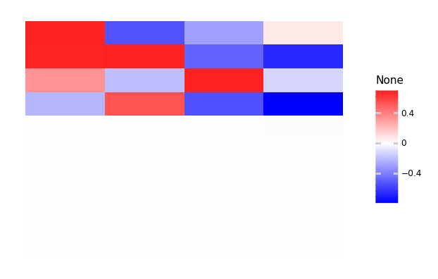
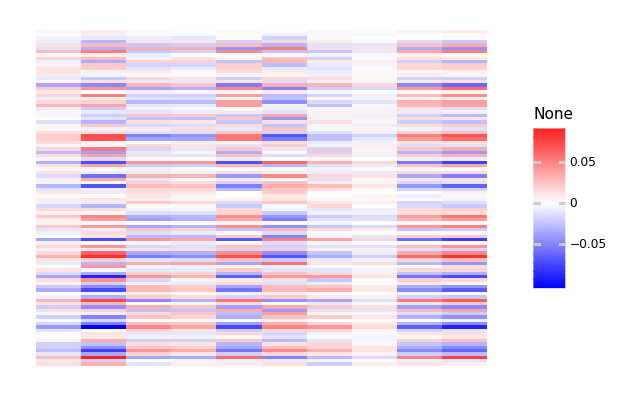
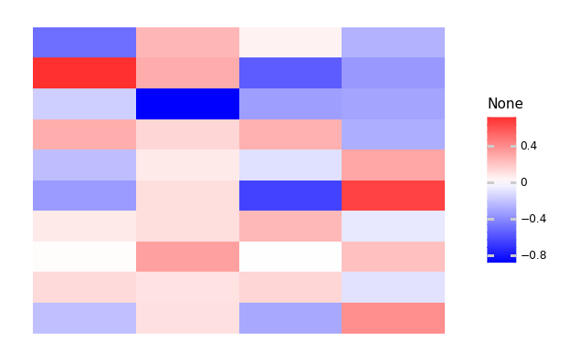

API 0.1.0¶
[1]:
import predicode as pc
import tensorflow.keras as keras
[2]:
hpc = pc.Hierarchical()
[3]:
hpc.add_tier(shape=(10, ))
[3]:
<predicode.hierarchical.hierarchical.Hierarchical at 0x7f44ef2e3610>
[4]:
hpc.add_tier(shape=(4, ))
Active connection: tier_1 -> tier_0
[4]:
<predicode.hierarchical.hierarchical.Hierarchical at 0x7f44ef2e3610>
[5]:
hpc.summary()
# Tier 1: tier_1
# Connection: tier_1 -> tier_0
(No tier connection defined.)
# Tier 0: tier_0
[6]:
hpc.connection = pc.connections.TopDownSequential()
[7]:
hpc.connection.add(keras.layers.Dense(10, input_shape=(4, ),
use_bias=False))
[8]:
hpc.summary()
# Tier 1: tier_1
# Connection: tier_1 -> tier_0
Top-down prediction.
## Predictive model
Model: "sequential"
_________________________________________________________________
Layer (type) Output Shape Param #
=================================================================
dense (Dense) (None, 10) 40
=================================================================
Total params: 40
Trainable params: 40
Non-trainable params: 0
_________________________________________________________________
## Prediction error
<tensorflow.python.eager.def_function.Function object at 0x7f44f4840110>
## Loss function
<function mean_squared_error at 0x7f44fe2bb3b0>
# Tier 0: tier_0
[9]:
dataset = pc.datasets.decaying_multi_normal(10, 100)
[10]:
hpc.compile(optimizer=pc.regimens.EMRegimen(
state_regimen=pc.regimens.OptimizerRegimen(keras.optimizers.Adam(),
eps=1e-3),
predictor_regimen=pc.regimens.OptimizerRegimen(keras.optimizers.Adam(),
eps=1e-8)),
metrics=[keras.metrics.MeanSquaredError()]
)
[11]:
dataset.dtype
[11]:
dtype('float32')
[12]:
hpc.train(dataset, epochs=500)
[12]:
<predicode.hierarchical.hierarchical.Hierarchical at 0x7f44ef2e3610>
[13]:
import sklearn.decomposition as decomp
pca = decomp.PCA(10).fit(dataset)
import numpy as np
final_weights = hpc.connection.model.get_weights()
normalized_weights = final_weights[0] / np.linalg.norm(final_weights[0], 2, axis=1, keepdims=True)
contribs = np.matmul(np.linalg.inv(pca.components_).T, normalized_weights.T)
import lazytools_sflippl as lazytools
lazytools.matrix_heatmap(contribs, pole=0)

[13]:
<ggplot: (8745874701305)>
[14]:
import lazytools_sflippl as lazytools
lazytools.matrix_heatmap(hpc.prediction_error('tier_0').numpy(), pole=0)

[14]:
<ggplot: (8755517580561)>
[15]:
hpc._raw_tiers
[15]:
[<tf.Variable 'hierarchical_1_tier_0:0' shape=(None, 10) dtype=float32, numpy=
array([[ 0.5180018 , -0.5020392 , 0.69197327, -0.1109162 , 0.10659228,
-0.193478 , 0.3712293 , -0.13346097, -0.29330575, -0.72092927]],
dtype=float32)>,
<tf.Variable 'hierarchical_1_tier_1:0' shape=(None, 4) dtype=float32, numpy=
array([[-0.96993744, -1.0153694 , 0.40426496, 0.8733335 ]],
dtype=float32)>]
What happens if we re-estimate states after every weight improvement?
[16]:
regimen = pc.regimens.EMRegimen(
state_regimen=pc.regimens.OptimizerRegimen(
keras.optimizers.Adam()
),
predictor_regimen=pc.regimens.OptimizerRegimen(
keras.optimizers.Adam(), max_steps=1, eps=1e-7
)
)
[17]:
hpc = pc.Hierarchical(tiers=[(10, ), (4, )])
hpc.connection = pc.connections.TopDownSequential([
keras.layers.Dense(10, input_shape=(4, ), use_bias=False)
])
Active connection: tier_1 -> tier_0
[18]:
hpc.compile(optimizer=regimen, metrics=[keras.metrics.MeanSquaredError()])
[19]:
import tensorflow as tf
import datetime
summary_writer = tf.summary.create_file_writer('log_2/{}'.format(datetime.datetime.now()))
[20]:
with summary_writer.as_default():
hpc.train(dataset, epochs=500)
[21]:
%load_ext tensorboard
[22]:
%tensorboard --logdir log_2
Reusing TensorBoard on port 6008 (pid 26642), started 0:14:14 ago. (Use '!kill 26642' to kill it.)
[23]:
import sklearn.decomposition as decomp
pca = decomp.PCA(10).fit(dataset)
[24]:
hpc.connection.model.get_weights()
[24]:
[array([[ 0.02783233, 0.4446691 , 0.10167968, 0.04282278, 0.11785586,
0.4946642 , -0.46309665, -0.29793537, 0.02711142, 0.37106854],
[ 0.61379665, 0.13196476, 0.22699323, 0.22479245, 0.11383592,
0.24530393, -0.42576247, 0.5327278 , -0.25367713, -0.19521189],
[ 0.33965966, -0.47410136, 0.4208074 , 0.11683799, 0.76038015,
-0.12369221, 0.15381712, -0.16772342, -0.33602542, 0.6017772 ],
[ 0.5172813 , 0.3608222 , -0.33366346, -0.2662277 , 0.03994589,
-0.638896 , 0.1635841 , 0.5855882 , 0.38672897, -0.57893133]],
dtype=float32)]
[25]:
import numpy as np
final_weights = hpc.connection.model.get_weights()
normalized_weights = final_weights[0] / np.linalg.norm(final_weights[0], 2, axis=1, keepdims=True)
contribs = np.matmul(np.linalg.inv(pca.components_).T, normalized_weights.T)
[26]:
import lazytools_sflippl as lazytools
lazytools.matrix_heatmap(contribs, pole=0)

[26]:
<ggplot: (8755517717985)>
[ ]: